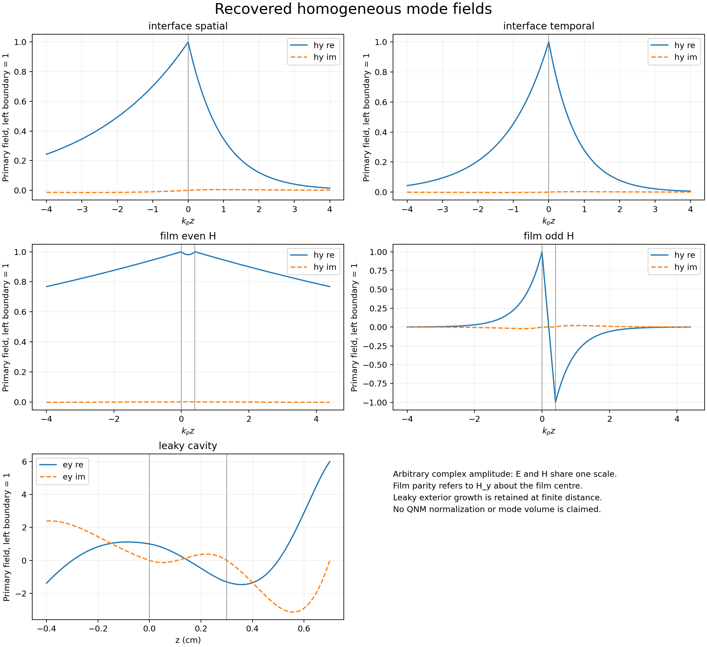

Both complex interface-plasmon cases, both coupled modes of a 40 nm metal film, and a leaky dielectric cavity. Each profile uses a common electric/magnetic complex scale with its left-boundary primary field set to one. This is arbitrary-amplitude recovery, without QNM normalization or mode volumes.

Magnetic parity refers to Hy about the film centre. Outgoing leaky fields grow at finite exterior distances; they are not clamped. Independent tests compare both supported backends, interface matching, magnetic parity and bound exterior decay.
Cartesian field data · Source points, gauges and recovery evidence · PDF · SVG
Reproduce from lamina-mode with cargo run --release --locked --example modal_fields -- NEW_DIRECTORY, then python scripts/plot_modal_fields.py NEW_DIRECTORY. See docs/modal-fields.md for sampling and units.